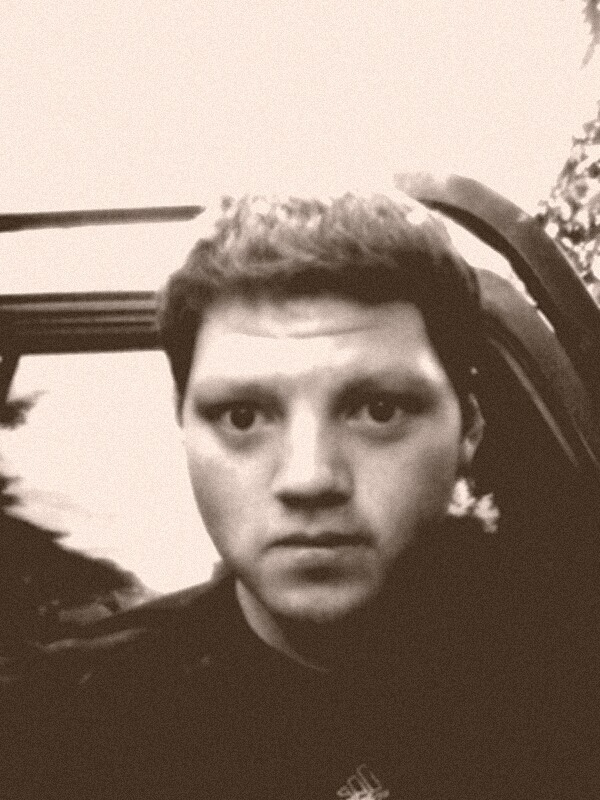

Connect with Me


Ramos-Marquez
About me
I was born in El Salvador but raised in Texas almost all my life. I always was keen in learning different languages and the cultures of different nationalities. The different type of Currencies in the World got me interested in learning how one currency of a country was higher or lower in value than in another country. In 2015 I began to study in the Forex Market which meant I had to invest time to patiently analyze how a country was in financial status and money as I began to trade from my capital against other investors, banks and institutions. As time whent by I have had my shares of bad days and extremely good days all depending on how well my trading method performed.
Learning how to program and telling the computer what to do, was also an interest in my life. If it's possible I would like to combine Forex Trading and coding to create something usefull that will inform with accurate data to those willing to invest for their future. Travelling is a big passion that motivates me, for I would like to explore uncharted and amazing places with a wide scenery over the land. Experiencing how people live a day by day differently in another part of the globe and understanding some of their problems, I will try to help in as much as I can with their situation, from the coldest tundra's in Russia to the smallest communities in New Zealand and everywhere in between.